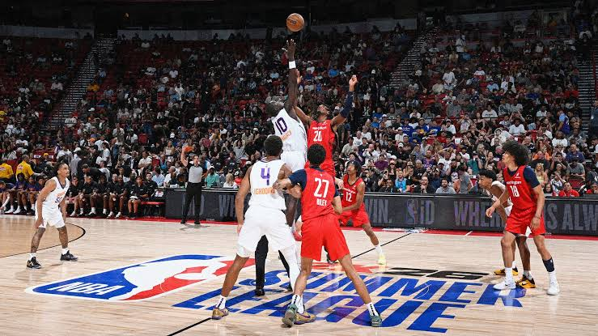
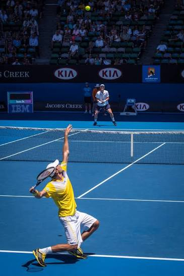

Football
Football is a popular team sport played between two teams of 11 players. The main objective is to score goals kicking the ball into the opponent's net. It requires teamwork, skills, speed, and good strategy. Football is enjoyed by millions of people around the world.

Basketball
Basketball is a fast-paced team sport played between two teams of five players. The aim is to score points by throwing the ball through the opponent's hoop while preventing the other team from scoring. It requires skills such as dribbling, passing, shooting, teamwork, speed, and coordination.

America Football
American football is a popular team sport played mainly in the United States. Two teams of 11 players compete to move an oval-shaped ball down the field by running or passing it. The main objective is to score a touchdown, worth 6 points, by getting the ball into the opponent's end zone. The sport is known for its strategy, physical contact, teamwork, and exciting plays.

Tennis
Tennis is a racket sport played between two players (singles) or two teams of two (doubles). Players hit a ball over a net into the opponent's court, aiming to score points by making shots that the opponent cannot return. It require speed, agility, coordination, endurance, and strategy.